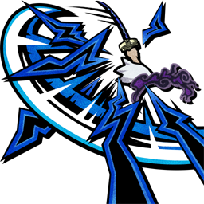
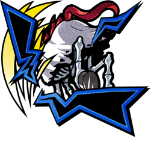

Nusjuro
Five Elders
О персонаже
Навыки

Skill 1
Godhead of Finance's Flash

Skill 2
Foolish!!
Трейты
Character Traits
English
When the user has moved continuously for a set period of time, movement and Normal Attack abilities will undergo a change.
These changes will be removed if the user does anything other than moving, dodging, or a Normal Attack.
The damage of the changed Normal Attack will be based on your DEF instead of ATK, and it will ignore enemy DEF.
When dealing damage with the changed Normal Attack, 50% chance to inflict Freeze for 6 seconds.
Power Gauge can be used, increases up to 5 but resets once KO'd, and increases Treasure Gauge recovery amount by 30% for each Power Gauge.
When Power Gauge is at 2 or higher: recover 100% HP when enough damage is taken to KO character and increase damage dealt to Straw Hat Pirates enemies by 50%.
When the trait “Recover HP when enough damage is taken to KO character” activates: uses 2 units of Power Gauge.
Русский
Если персонаж некоторое время непрерывно двигается, его передвижение и Normal Attack (Обычная атака) изменяются.
Изменения снимаются, если персонаж делает что-то кроме движения, Dodge (Уклонения) или Normal Attack.
Урон изменённой обычной атаки считается от DEF, а не от ATK, и игнорирует DEF врага.
При нанесении урона изменённой обычной атакой: с шансом 50% накладывает Freeze (Заморозку) на 6 секунд.
Power Gauge может накапливаться до 5, но сбрасывается после KO. За каждую единицу Power Gauge восстановление Treasure Gauge увеличивается на 30%.
Когда Power Gauge равен 2 или выше: при получении смертельного урона восстанавливает 100% HP и увеличивает урон по врагам типа Straw Hat Pirates на 50%.
Когда активируется эффект восстановления HP при смертельном уроне: расходует 2 единицы Power Gauge.
Character Trait 2
English
When spawning: acquire a defensive shield with durability equal to 20% of max HP.
While defensive shield is active, enemy attacks reduce shield durability instead of HP and inflict Stagger on the enemy who attacked you. Excludes some attacks.
When using Skill 1: recover durability of defensive shield by 50%, restores the shield if it was destroyed.
Recovers the Treasure Gauge 50% past its maximum amount and can ignore the enemy and refill the Treasure Gauge.
Русский
При появлении получает Defensive Shield (Защитный щит) с прочностью 20% от максимального HP.
Пока щит активен, атаки врагов уменьшают прочность щита вместо HP и накладывают Stagger на атакующего врага. Некоторые атаки исключены.
При использовании Skill 1: восстанавливает прочность Defensive Shield на 50%. Если щит был разрушен, он восстанавливается.
Восстанавливает Treasure Gauge на 50% выше максимума и может игнорировать врага при заполнении Treasure Gauge.
Trait 1
English
When attacking an enemy with a skill: increase DEF by 25%, increases up to 70% but resets once KO'd, and nullify the trait “1 HP will be left even if KO'd by enemy”.
When Power Gauge is at 1 or higher: resist Stagger and nullify status effects inflicted by enemy.
When the Treasure Gauge is recovered to 150%: boosts Power Gauge by 1.
Русский
При атаке врага навыком: увеличивает DEF на 25%, максимум до 70%, но эффект сбрасывается после KO. Также игнорирует трейт 1 HP will be left even if KO'd by enemy.
Когда Power Gauge равен 1 или выше: получает сопротивление Stagger и иммунитет к Status Effects, наложенным врагом.
Когда Treasure Gauge восстановлен до 150%: увеличивает Power Gauge на 1.
Trait 2
English
After KOing an enemy: boosts Power Gauge by 1 and reduce the cooldown time of Skill 2 by 30%.
After receiving damage from an enemy which is 20% or more of your max HP: recover HP by 30% and reduce the cooldown time of Skill 1 by 30%.
After receiving damage from an enemy which is 50% or more of your max HP: reduces damage received by 50%.
Русский
После KO врага: увеличивает Power Gauge на 1 и сокращает Cooldown Skill 2 на 30%.
После получения урона от врага, равного 20% или больше от максимального HP: восстанавливает 30% HP и сокращает Cooldown Skill 1 на 30%.
После получения урона от врага, равного 50% или больше от максимального HP: Damage Received уменьшается на 50%.
Boost Trait
English
When spawning: boosts Power Gauge by 2.
Русский
При появлении: увеличивает Power Gauge на 2.
Медали
🏅 Рекомендуемый сет

Kaido Medal

Wildfire Medal
 Medal.png)
Kaido Human-Monster